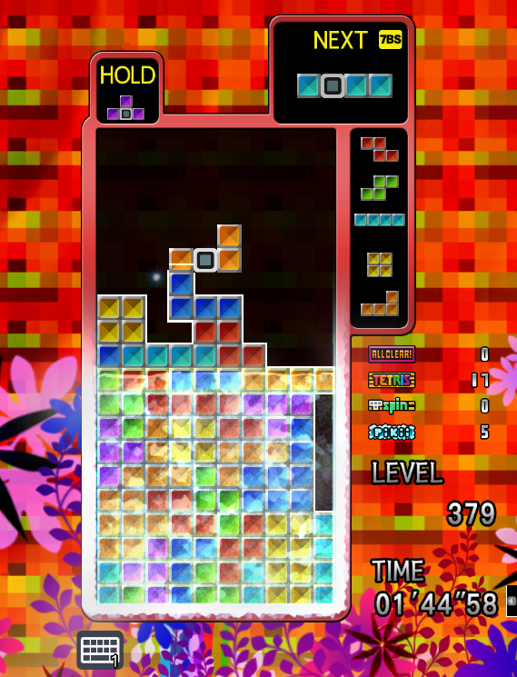
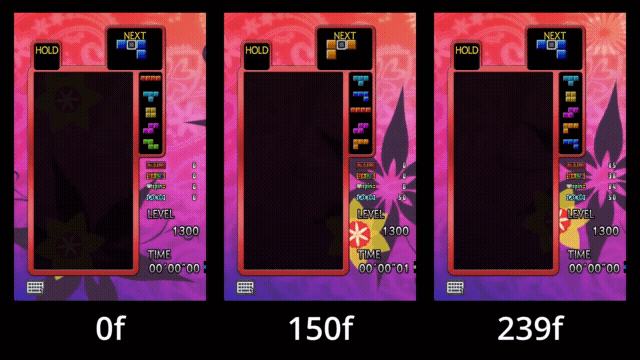
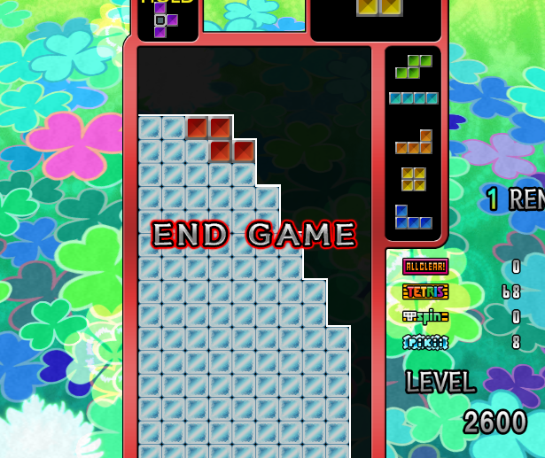

MỞ ĐẦU
Hi! Đây là một cái guide (chắc là) cơ bản để nói về chế độ Master của Tetris: The Grandmaster 4 - Absolute Eye
Guide này được viết bởi suitougreentea, và dịch sang tiéng Việt bởi ItzBlack
Hi! Đây là một cái guide (chắc là) cơ bản để nói về chế độ Master của Tetris: The Grandmaster 4 - Absolute Eye
Guide này được viết bởi suitougreentea, và dịch sang tiéng Việt bởi ItzBlack
Tương tự như chế độ T.A Death của TGM2P và Shirase của TGM3, các khối sẽ rơi xuống đáy bảng ngay khi xuất hiện.
Ngoài ra, còn có những gimmick thách thức khả năng xếp gạch của bạn.
Đạt level 2600 (2 lần)
Đạt được trong quá trình chơi. Có liên quan đến một số gimmick
| Medal | Điều kiện | Level Boost | Thời gian đóng băng (1/60 s) |
|---|---|---|---|
| ALL CLEAR! | Thực hiện All Clear | +1 Level mỗi 6 medal | +2.5 mỗi medal, làm tròn xuống |
| TETRIS | Lấp đầy 4 hàng cùng một lúc | +1 Level mỗi 10 medal | +1 mỗi medal |
| T-SPIN | Thực hiện T-Spin Double (hoặc T-Spin Triple) | +1 Level mỗi 16 medal | +1 mỗi medal |
| PIKII | Lấp đầy hàng trong khu vực đóng băng | +1 Level mỗi 28 medal | +3 mỗi medal |
Level boost sẽ được áp dụng mỗi khi xóa hàng.
Thời điểm: Level 300-399, 500-599, 700-999
Nửa dưới của bảng sẽ bị đóng băng. Khi bạn lấp đầy hàng trong khu vực này, nó sẽ không biến mất cho đến khi bạn vượt qua section hiện tại.

Từ level 700 đến 999, thì Pikii-2 sẽ xuất hiện. Khi vượt qua section, các hàng đóng băng đã lấp đầy sẽ biến mất, rồi bảng lại đóng băng
Hạn chế mắc sai lầm. Khi đã mắc sai lầm, đặc biệt là ở Pikii-2, thì cơ hội sửa sai là rất ít.
Thời điểm: Level 1000+ (1000-1299 ở bản Nintendo Switch)
Một số khối sẽ bị xoay sẵn.
Hộp NEXT sẽ cho bạn biêt hướng của 1 khối tiếp theo, các khối sau đó vẫn ở trạng thái bình thường.
Bạn chơi Tetris càng lâu, bạn sẽ nhận ra sự lĩn hàm của gimmick này. Đặc biệt là người chơi Standard Rule
Đây cũng chính là một trong những lí do khiến Master Pikii rất khó
Chơi chậm, nhìn Next. Nếu chơi quá nhanh, bạn có thể nhìn nhầm hướng của khối tiếp theo, dẫn đến một chuỗi sai lầm.
Thời điểm: Level 1300+
Khối sau khi đặt xuống một khoảng thời gian sẽ bị đóng băng.
Khoảng thời gian đó được quyết định bằng số lượng medal hiện có. Bắt đầu từ 2f, cộng thêm khoảng thời gian kiếm được từ medal

Nếu chiến thuật bạn chọn cần ít thời gian đóng băng, bạn có thể cố ý lấy ít badge để rút ngắn thời gian đóng băng.
Thời điểm: Level 2600
Sau khi đạt level 2600 với đủ điều kiện, Bạn sẽ tiến vào giai đoạn END GAME.
Bạn sẽ tua ngược về 65 giây trước. Và trong 65 giây tiếp theo, bạn phải đạt level 2600 một lần nữa.

Chuẩn bị cho tay không run lúc đấy. Hoạt ảnh tua ngược dài khoảng 25 giây, đủ để chuẩn bị tinh thần
Nếu chơi Tetris đối kháng, bạn sẽ nghĩ ngay đến 4-wide
Vấn đề ở đây là, khi xóa hàng có khối băng, phần trên sẽ không hạ xuống
Và mọi thứ sẽ tệ hơn khi phần dư bị đóng băng. Nên bạn phải phá phần dư trước khi nó đóng băng.
Oke, món khai vị dã xong, bây giờ sẽ là món chính. Đó là những cách để vượt qua Master Pikii
Chỉ áp dụng cho Standard Rule
Sáng tạo bởi Kirby703, và đây là cách rất phổ biến vì nó là cách đầu tiên đạt được Gm
Phần lỗ để xóa S/Z sẽ áp dụng All-Spin
Phần 3W dùng để xóa L, J, T. Không thể xóa lẻ một khối nên phải kết hợp cả ba lại
O với I thì nhìn phát biết luôn phải để đâu
Một khi đã xây xong setup, bạn có thể liên tục xóa hàng
Vì mỗi khối đều có thể xóa ít nhất một hàng, nên tốc độ tăng level của bạn sẽ rất nhanh
Một khi mắc sai lầm thì gần như không thể khôi phục. Nên bạn phải chơi hoàn hảo ở tốc độ cao.
Phải học hướng của khối S và Z. Điểm chung của cả hai khối này là: Đưa tâm sang phải, xoay ngược chiều kim đồng hồ
Phần lỗ để xóa S/Z khá phức tạp. Nên học các cách xây nó sẽ giúp ích rất nhiều.
Để ý thứ tự L, T, J. Nếu đã đặt J hoặc T, trừ I thì không có khối nào có thể đi vào vị trí mong muốn. Sử dụng hộp Hold để thay đổi thứ tự nếu cần.
Sau khi đặt khối L, nếu T, J đến muộn, phần dư của khối L sẽ đóng băng. Nên là có thể cân nhắc việc dùng cặp SL và LL.
Setup này nhắm vào việc tăng medal T-Spin. Nếu J đến trước T, bạn có thể thực hiện TSD với phần dư của khối J.
Dịch:あくまでアイデア段階の手法です
— アガラナイの滝 (@RunningOutRate) July 6, 2025
1300以前に置いたブロックは凍結しないという性質があるので，1000~1300の間に1枚目の積みを構築する．これは10段目までが中開けK.M.のNOTに対応する．
1300以降に2枚目のように隙間を埋める．置いたミノが凍った後に列をそろえるとNOTの部分だけが消える． https://t.co/mGcOxNsr86 pic.twitter.com/1lW4HiYTmg
Dịch:すると上手くやれば（？）1枚目のようになって，中開けK.M.の形になる．
— アガラナイの滝 (@RunningOutRate) July 6, 2025
上手くやれば2枚目みたいにいい感じに土台が凍結してくれるはずである．
あとはフィーバータイムです．横移動無しのコンボをお楽しみください．人間がやるには難しすぎる pic.twitter.com/RiS1yOIlvz
Ai dùng cái này t quỳ luôn :)))
Sáng tạo bởi Yoshi
Phần 2W dùng để xóa đa số khối. Thông thường sẽ dư ra một ô, tùy thuộc vào khối bạn dùng, khối dư đó có thể đi lên, xuống, sang trái, phải.
Phần 3W rất quan trọng vì nó được dùng để loại bỏ ô dư khi nó lên trên cao.
Có thể dùng các cặp khối kết hợp với phần 3W để tự xóa.
Phần 4W dùng để xóa khối I, nhưng vẫn có thể đặt khối I vào phần 2W để kiếm Tetris.
Giống Kirby Machine, một khi đã xây xong setup, bạn có thể liên tục xóa hàng.
Một khi đã mắc sai lầm ở phần 3W và các khối đó đóng băng, sẽ không thể tiếp cận phần 2W nữa.
Học các pattern xóa phần dư là rất quan trọng. Nó hiệu quả hơn việc đặt bừa và cầu nguyện.
Nếu stack đủ khéo, bạn có thể chỉnh độ cao các phần và kiếm Tetris.
Chừa phần bên trái để bỏ các khối không theo mong muốn.
Nếu xóa bằng các cặp khối, phải cẩn thận để phần dư không bị đóng băng. Tùy thuộc vào medal và tốc độ, nhưng nếu sau 4 khối thì khả năng cao là nó sẽ đóng băng. Vậy nên...
Sáng tạo bởi suitougreentea
Phần 1W dùng để xóa Tetris, hạ thấp stack.
Phần 2W và 3W dùng để xóa các cặp khối
Tetris sẽ lấy đi phần 1W, nên bạn có thể sẽ phải xây lại setup (sẽ gọi là "bổ sung").
Kể cả có mắc sai lầm ở dưới, miễn phần 1W có ít nhất 4 hàng, bạn vẫn có thể xóa bỏ các sai lầm đó.
Vì có thể nhận medal Tetris, nên bạn sẽ có tốc độ tăng level nhanh hơn ở phần END GAME.
Nếu có nhiều S/Z, bạn sẽ phải lựa chọn giữa bỏ sang trái hoặc phá setup và bổ sung.
Bổ sung là phần khó nhất của chiến thuật này. Nếu bạn có thể đảm bảo những điều sau đây, tỉ lệ thành công sẽ tăng lên rất nhiều.
Phần 2W BẮT BUỘC phải cao 2 hàng. Nên không chỉ học cách xây 2 hàng, mà còn những cách sửa khi không phải 2 hàng.
So với 2W, sẽ có nhiều trường hợp phải bỏ khối sang trái hơn. Sẽ rất tốt nếu bạn có thể xử lí nó mà không làm stack quá xấu.
Có rất nhiều cặp khối đi cùng với J, nên hãy đưa ra lựa chọn hợp lí dựa vào NEXT.
Bổ sung sau level 2000 rất nguy hiểm, nên bổ sung vào 1800-1900 rồi tập trung xóa từ 2000 trở đi. Nếu phần 1W cạn, có thể xây phần 4W để xóa khối I nằm ngang.
Chẳng cần setup gì cả, cứ xóa khối trước khi nó đóng băng là được
Chẳng cần chuẩn bị gì cả! Cứ thế xóa hàng thôi.
Một khi khối đã đóng băng, nó sẽ trở nên vô dụng. Nên đây là thử thách đạt level 2600 với ít khối băng nhất.
Thời gian đóng băng là rào cản lớn nhất của chiến thuật này. 15-38-14-50 là tối đa trong luyện tập, nhưng cũng chỉ vừa đủ. Thực tế rất khó để đạt 240f.
Tốc độ là yếu tố cần thiết trong chiến thuật này. Nhưng manlock với Cyclone rất khó, yêu cầu luyện tập và tập trung cao độ.
Bạn gần như chỉ xóa Single và Double, tốc độ tiến triển level sẽ rất chậm. Không phù hợp nếu đang thực hiện time attack.
Xây thật phẳng. Nếu xây nhấp nhô, một phần của khối sẽ đóng băng và bạn không thể xóa hàng được.
Dùng các khối phẳng (đặc biệt là I) nằm. Nếu bạn đặt dọc, số hàng cần xóa sẽ tăng lên và mất thời gian. Chỉ đặt dọc nếu đủ tự tin là mình xóa được hoặc là muốn bỏ một phần bảng và đi lên.
Cảm nhận thời gian đóng băng bằng cách luyện tập. Tập trung vào khối đã khóa và xem nó mất bao lâu để đóng băng, để rồi lựa chọn xóa hàng hoặc bỏ và đi lên.
Nếu xóa hàng có khối băng, stack sẽ rất xấu, nên đôi lúc sẽ tốt hơn để bỏ và đi lên.
Nếu hàng nào đó có khối băng, hãy lấp 9 khối vào hàng đó và chờ nó đóng băng. Nó sẽ giúp việc xóa hàng ở trên dễ dàng hơn.
Nếu bạn muốn luyện tập Cyclone theo một cách xàm nhất có thể, hãy thử chơi bằng strat này.
Đél gì nhiều chữ thế???
Vẫn là Korean Stacking, nhưng bạn có thể kiếm thêm Tetris.
Chơi rất giống Tetris phổ thông.
Có thể kiếm thêm medal Tetris cho END GAME. Khi đến đó, bạn có thể tiếp tục dùng chiến thuật này hoặc đổi sang chiến thuật khác với tốc độ tăng level nhanh hơn.
Bạn vẫn có thể chơi tiếp miễn là bạn kiếm được Tetris. Không cần quá nhiều hàng để setup, và bạn có thể khôi phục từ dòng thứ 15.
Nếu bạn lỡ chặn lỗ Tetris và nó đóng băng, thì bạn sẽ mất luôn phần dưới của bảng. Những trường hợp thế này xảy ra khi bạn nghĩ là mình có thể xóa hàng trước khi nó đóng băng.
Giống như K.S., cảm nhận thời gian đóng băng.
Đôi lúc, bạn có thể lựa chọn để lỗ trong một lúc. Miễn phần trên của nó không bị đóng băng, bạn vẫn có thể lấp lại.
Nếu đã chọn xây Tetris, hãy xây một cách chủ động. Nếu như xây từng chút một và mắc sai lầm, sẽ không thể xóa Tetris để khôi phục được.
Cảm ơn bạn vì đã dành thời gian ra để đọc guide này
Mong là nó sẽ giúp bạn thay đổi suy nghĩ từ "Khó thế sao chơi???" thành "Cũng thú vị, để thử xem sao."
Và biết đâu được, bạn có thể chính là Grand-Master tiếp theo...